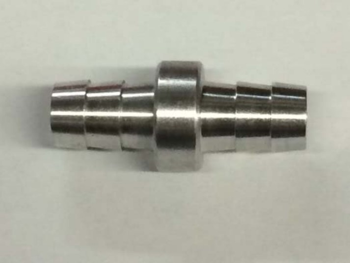

Doc no. MOC-TSB-15-02 // Vol. 15 No. 02 // Jan 7, 2015 // Transmission
Fluid Flow Regulator for the Smart Tech ATF Machines
New94886
MOC has designed a new Fluid Flow Regulator to be used with the Smart Tech® ATF machine. This fitting will slow down the fluid exiting a vehicle to improve the 1:1 ratio during an exchange.
What's new
A kit is now available to add this Flow Regulator to an existing machine.
Key benefits
- Fluid Flow Regulator
- Clamps
- Installation instructions
Contact
For more information, contact the Machine & Equipment Department at 866.244.6621.

Part numbers
| Part No. | Description | Notes |
|---|---|---|
| 94886 | Smart Tech ATF Flow Regulator Kit |